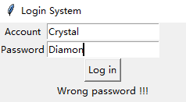

Python Notebook 第3周——Python背景知识安装PythonHomework第4周——Python程序的基本语法数字类型字符串类型字符串的序号体系转义字符基本的字符串操作符内置的字符串处理函数内置的字符串处理方法print()函数高阶用法ASCII编码到Unicode编码语法元素函数内置数值运算操作符内置数值运算函数数字类型的转换第5周——课程回顾Homework第6周——Python程序的基本流程控制（1）引入第三方库顺序结构分支结构分支语句嵌套Homework第7周——Python程序的基本流程控制（2）循环结构文件遍历Homework第8周——Python的特征数据类型（1）数据类型序列类型元组列表字符串序列的基本操作Homework第9周——Python的特征数据类型（2）Random库集合类型集合的定义集合类型的操作符集合基本操作函数集合判断成员资格增加元素删除操作字典类型字典定义字典的基本操作创建一个空字典，添加键-值对修改字典中的值访问字典中的值删除键-值对成员资格遍历字典Homework第10周——文件文件地址打开文件编码模式读取文件写入文件jieba库的使用例题——英文词频统计例题——《三国演义》中文词频统计Homework第11周——函数函数模板阅读带函数的代码lambda函数默认值函数随机函数例题——星座运势Homework第12周——面向对象的程序设计面向对象的3个特性类(Class)的构成部分Homework第13周——图形化界面设计（1）根窗体Homework第14周——图形化界面设计（2）Homework第15周——绘图turtle库与基本绘图CanvasHomework
Python Notebook
created by yunTaoScripts©
Email：woshixianren@outlook.com
第3周——Python背景知识
- Python程序设计基础
- 作者：李东方
- 出版社：电子工业出版社
网络资源
2018 编程语言热度
- Guidovan Rossum ——Python语言创立者（1990年）
- 2002年-2010年，Python 2.x
- 2008年-至今，Python 3.x
安装Python
Homework
- 圆面积计算
radius = 16area = 3.1415*radius*radiusprint(area)print("{:.2f}".format(area))#保留两位小数- 简单的人名对话
xxxxxxxxxxname = input("Please input your name>>:")print("{}同学".format(name))print("{}大虾".format(name[0]))print("{}哥哥".format(name[1:]))- 斐波那契数列的计算
xxxxxxxxxxa,b = 0,1while a<1000: print(a,end=',')#print默认end='\n'。 a,b = b,a+b- 同切圆的绘制
xxxxxxxxxximport turtleturtle.pensize(5)#设置画笔粗细为5turtle.circle(10)#半径10像素turtle.circle(40)turtle.circle(160)- 日期和时间的输出
xxxxxxxxxxfrom datetime import datetimenow = datetime.now()#当前日期和时间print(now)print(now.strftime('%x'))#输出日期部分print(now.strftime('%X'))#输出时间部分第4周——Python程序的基本语法
数字类型
整数
- int——1
浮点数
- float——1.1
布尔值
- bool——True, False
复数
- complex——3+4j
字符串类型
- 单引号——'This is my world!!!' 单引号和双引号主要区别：要输出单引号，两侧必须使用双引号
- 双引号——''This is my world!!!''
- 三引号——'''This is my world!!!''' 三引号可以原样输出换行符：存在多行字符串时使用三引号
字符串的序号体系
- 正向递增序号，反向递减序号
- 索引访问
xxxxxxxxxxs = 'yunTaoScripts's[-2]s[2]=========================='t''n'- 字符串区间访问
xxxxxxxxxx格式<string>[<start>:<end>]<string>[N:M]表示一个左闭右开区间[N,M)<string>[0:4] – “Hell”<string>[2:-1] – “llo Worl”<string>[-3:] – “rld”<string>[:3] – “Hel”转义字符
- Python语言转义符: 与后面相邻的一个字符共同组成新的含义。
xxxxxxxxxx\n 表示换行 \\ 表示反斜杠\’表示单引号 \”表示双引号\t 表示制表符 （Tab）基本的字符串操作符
| 操作符 | 描述 |
|---|---|
| x + y | 连接两个字符串 x 与 y |
| x * n 或 n * x | 复制n次字符串x |
| x in s | 如果x是s的子串，返回True，否则返回False |
| str[i] | 索引，返回第i个字符 |
| str[N:M] | 切片，返回索引第N到第M的子串，其中不包含M |
内置的字符串处理函数
| 操作符 | 描述 |
|---|---|
| len(x) | 返回字符串x的长度 |
| str(x) | 返回任意类型x所对应的字符串形式 |
| chr(x) | 返回Unicode编码x对应的单字符 |
| ord(x) | 返回单字符表示的Unicode |
内置的字符串处理方法
| 方法 | 描述 |
|---|---|
| str.lower() | 返回字符串str的副本，全部字符小写 |
| str.upper() | 返回字符串str的副本，全部字符大写 |
| str.islower() | 当str所有字符都是小写时，返回True，否则False |
| str. isnumeric() | 当str所有字符都是数字时，返回True，否则False |
| str.isspace() | 当str所有字符都是空格，返回True，否则False |
| str.endswith(suffix[,start[,end]]) | str[start: end] 以suffix结尾返回True，否则返回False |
| str.startswith(prefix[, start[, end]]) | str[start: end] 以suffix开始返回True，否则返回False |
| str.split(sep=None, maxsplit=-1) | 返回一个列表，由str根据sep被分割的部分构成 |
| str.count(sub[,start[,end]]) | 返回str[start: end]中sub子串出现的次数 |
| str.replace(old, new[, count]) | 返回字符串str的副本，所有old子串被替换为new，如果count给出，则前count次old出现被替换 |
| str.center(width[, fillchar]) | 字符串居中函数，详见函数定义 |
| str.strip([chars]) | 返回字符串str的副本，在其左侧和右侧去掉chars中列出的字符 |
| str.format() | 返回字符串str的一种排版格式，3.6节将详细介绍 |
| str.join(iterable) | 返回一个新字符串，由组合数据类型（见第6章）iterable变量的每个元素组成，元素间用str分割 |
| str.find(s) | 搜索指定字符串 |
print()函数高阶用法
- format()方法中模板字符串的槽除了包括参数序号，还可以包括格式控制信息。
- 此时，槽的内部样式如下：{<参数序号>: <格式控制标记>}
- 宽度为30，居中对齐，且使用'-'填充
xxxxxxxxxxs='yunTaoScripts'print("{0:-^30}".format(s))============================--------yunTaoScripts---------- 保留两位小数
xxxxxxxxxxs=3.1415926print("{:.2f}".format(s))=================================3.14- print默认换行
xxxxxxxxxxprint(“”, end = “\n”) #换行print(“”, end = “”) #不换行ASCII编码到Unicode编码
- ASCII编码只针对英文设计
- Unicode编码支持几乎所有书写语言的字符
语法元素
变量：程序中值发生改变或者可以发生改变的元素。
变量命名
允许：采用大写字母、小写字母、数字、下划线(_)和汉字等字符及其组合给变量命名。
禁止：
- 名字的首字符不能是数字
- 中间不能出现空格
- 不能和保留字名字相同
注意：标识符对大小写敏感——
python和Python是两个不同的名字
保留字：保留字即关键字，我们不能把它们用作任何变量名称
查看关键字列表
xxxxxxxxxximport keyword keyword.kwlist ==============================['False', 'None', 'True', 'and', 'as', 'assert', 'break', 'class', 'continue', 'def', 'del', 'elif', 'else', 'except', 'finally', 'for', 'from', 'global', 'if', 'import', 'in', 'is', 'lambda', 'nonlocal', 'not', 'or', 'pass', 'raise', 'return', 'try', 'while', 'with', 'yield']函数
- type函数： 返回变量和数据的类型
xxxxxxxxxxtype(1)type(1.1)type('scripts')=================================<class 'float'><class 'int'><class 'str'>- print()函数：控制台输出的唯一方式
- input()函数：控制台输入的唯一方式
- eval()函数：它能够以Python表达式的方式解析并执行字符串，将返回结果输出
- 语句：超长语句超过80个字符允许使用反斜杠连接符（“\”）
内置数值运算操作符
| 操作符 | 描述 |
|---|---|
| x + y | x与y之和 |
| x - y | x与y之差 |
| x * y | x与y之积 |
| x / y | x与y之商 |
| x // y | x与y之整数商，即：不大于x与y之商的最大整数 |
| x % y | x与y之商的余数，也称为模运算 |
| -x | x的负值，即：x*(-1) |
| +x | x本身 |
| x**y | x的y次幂，即：xy |
内置数值运算函数
| 操作符 | 描述 |
|---|---|
| x + y | x与y之和 |
| x - y | x与y之差 |
| x * y | x与y之积 |
| x / y | x与y之商 |
| x // y | x与y之整数商，即：不大于x与y之商的最大整数 |
| x % y | x与y之商的余数，也称为模运算 |
| -x | x的负值，即：x*(-1) |
| +x | x本身 |
| x**y | x的y次幂，即：xy |
数字类型的转换
| 函数 | 描述 |
|---|---|
| int(x) | 将x转换为整数，x可以是浮点数或字符串 |
| float(x) | 将x转换为浮点数，x可以是整数或字符串 |
| complex(re[, im]) | 生成一个复数，实部为re，虚部为im，re可以是整数、浮点数或字符串，im可以是整数或浮点数但不能为字符串 |
第5周——课程回顾
Homework
数字输出
- 编程实现，从键盘输入一个5位数字，分别输出它的个位数和千位数
xxxxxxxxxxnumber = input("Input random number>>")print("个位是{0},千位是{1}".format(number[-1],number[-4]))BMI值计算
- 编程实现，分别输入身高和体重，输出BMI值，并保留1位小数
xxxxxxxxxxweight=float(input("You weight(Kg)>>"))height= float(input("Your height(Meter)>>"))BMI= weight/(height*height)print("BMI is {:.1f}".format(BMI))统计长度
- 编程实现统计任意数的20次幂的值和位数。例如：2的20次幂的值为1048576，位数为7
xxxxxxxxxxnumber = int(input("Input random number>>"))result=str(pow(number,20))print("Result is {0},total digit is {1}".format(result,len(result)))数字加密
- 某个公司采用公用电话传递数据，数据是四位的整数，在传递过程中是加密的，加密规则如下：每位数字都加上5,然后用和除以10的余数代替该数字，再将第一位和第三位交换，第二位和第四位交换。
- 编程实现，输入一个四位数明文，输出密码
xxxxxxxxxxresult=''number = input("Input four digits>>")for i in number: result+=str((int(i)+5)%10)result = result[2]+result[3]+result[0]+result[1] print("Encryption result is {0},".format(result))
第6周——Python程序的基本流程控制（1）
引入第三方库
- 方式一：使用库中函数的格式如
import <库名> - 方式二：
from <库名> import <函数名>，from <库名> import *
顺序结构
- 为了解决某些实际问题，自上而下依次执行各条语句
分支结构
- 满足条件就执行某些语句块；不满足条件就不执行某些语句块
- if语中<条件>部分可以使用任何能够产生True或False的语句
- Python语言共有6个关系操作符
分支语句嵌套
- if子句、elif子句以及else子句中都可以嵌套if语句或者if-elif-else子句
Homework
- 编写程序，产生两个10以内的随机整数，以第一个随机整数为半径，第二个随机整数为高，计算并输出圆锥体的体积
xxxxxxxxxximport mathimport randoma = random.randint(1,10)b = random.randint(1,10)V = math.pi * a * b / 3print("半径为{},高为{},圆锥体的体积是{}".format(a,b,V))- 编写程序，从键盘输入一个年份值，判断该年是否是闰年并输出判断结果。（提示：若该年份值能被4整除且不能被100整除或者该年份值能被400整除，则该年是闰年，否则不是）
xxxxxxxxxxa = int(input("请输入年份"))if a % 400 == 0: print("该年是闰年")elif a % 4 == 0 and a % 100 > 0: print("该年是闰年")else: print("该年不是闰年")- 编写程序，从键盘输入a,b,c的值，计算一元二次方程ax2 +bx+c=0的根，根据b2-4ac的值大于0、等于0及小于0分别进行讨论
xxxxxxxxxxa = eval(input("请输入二元一次方程二次项系数"))b = eval(input("请输入二元一次方程一次项数"))c = eval(input("请输入二元一次方程常数项"))deta = b ** 2 - 4 * a * cm = (-b + (b * b - 4 * a * c)**0.5)/(2 * a)n = (-b - (b * b - 4 * a * c)**0.5)/(2 * a)if deta == 0: print("方程有两个相等实根，x1=x2=%s"%(m))elif deta > 0: print("方程有两个不同实根，x1=%s,x2=%s"%(m,n))else: m = complex(-b /(2 * a), (-b * b + 4 * a * c)**0.5/(2 * a)) n = complex(-b /(2 * a), -(-b * b + 4 * a * c)**0.5/(2 * a)) print("方程有两个不同虚根,x1={},x2={}".format(m,n))上海市市属供排水服务区域的居民用户水价同步实行阶梯水价制度：
第一阶梯水量为每户每年0至220立方米(含)，综合水价为3.45元/立方米;
第二阶梯水量为每户每年220至300立方米(含)，综合水价为4.83元/立方米;
第三阶梯水量为每户每年300立方米以上的部分，综合水价为5.83元/立方米。
编写程序，实现输入每户每年的用水量，输出总水费
xxxxxxxxxxwater = eval(input("请输入每户每年的用水量(立方米)"))if water >= 0 and water <= 220: fee = 3.45 * waterelif water <= 300: fee = 3.45 * 220 + (water - 220) * 4.83else: fee = 3.45 * 220 + 4.83 * 80 + (water - 300) * 5.83print ("总水费%s元"%(fee))第7周——Python程序的基本流程控制（2）
循环结构
确定次数循环
for循环
遍历结构可以是字符串，文件，组合数据类型或 range()函数：
内建函数range()用于生成整数序列
range(start, end, step)，左闭右开区间[start, end)，step代表序列的步长（可以省略，默认值是1）
xxxxxxxxxxfor 循环变量 in 对象: 语句块Aelse: #可选 语句块B非确定次数循环
- while循环
xxxxxxxxxx初始值 while 表达式: #表达式的值为真 语句块A #符合条件时执行的语句else: #可选项 语句块B转移和中断语句
break语句
- break语句用于中断当前循环的执行，跳出循环结构
- 对于包含else子句的while循环和for循环而言，在while或for子句中一旦执行break语句，else子句将没有机会执行
continue语句
- continue语句用于中断本次循环的执行，进入下一轮循环条件是否满足的判断
文件遍历
- 方法一
xxxxxxxxxxwith open('yunTest.txt','r',encoding = 'utf-8') as f: for line in f: print(line)- 方法二
xxxxxxxxxxf = open('yunTest.txt','r',encoding = 'utf-8')for line in f: print(line)f.close()Homework
- 编写程序，从键盘输入数字n，通过循环计算1~n的乘积
xxxxxxxxxxnumber = int(input("Please input your number>>:"))mutilpyResult=1for i in range(1,number+1): mutilpyResult*=iprint("Result is %d"%mutilpyResult)- 编写程序，通过循环计算全部水仙花数，并依次输出。水仙花数是一个三位数字，该数字等于组成该三位数的各位数字的立方和。例如13+53+33=153
xxxxxxxxxxfor num in range(100,1000): if int(str(num)[0])**3+int(str(num)[1])**3+int(str(num)[2])**3 == num: print(num)- 编写程序，判断一个整数是否为素数（判断整数x是否为素数，最简单的方法就是用2~x-1之间的所有整数逐一去除x，若x能被其中任意一个数整除，则x就不是素数，否则就为素数）
xend = int(input("Please input your number>>;"))if end == 1 or end ==2: print(end, "is sushu")for num in range(2,end): if end%num==0: print(end,"is not sushu") breakelse: print(end,"is sushu")
- 编写程序，开发一个循环5次计算的小游戏，每次随机产生两个100以内的数字，让用户计算两个数字之和并输入结果，如果计算结果正确则加一分，如果计算结果错误则不加分。如果正确率大于等于80%，则闯关成功
xxxxxxxxxximport randomprint("Game Start".center(30,'='))x=[m for m in range(101)]rightEx=0for Round in range(5): ret = random.sample(x,2) print("Please calculate: %d plus %d equals >>:"%tuple(ret)) res = input() if int(res) == ret[0]+ret[1]: print("Right") rightEx+=1 else: print("Wrong")if rightEx>=4: print("Victory")else: print("Defeat")第8周——Python的特征数据类型（1）
数据类型
序列类型
- 有序的元素排列
- 序列类型是一维元素向量，元素之间存在先后关系，通过序号访问。
- 当需要访问序列中某特定值时，只需要通过下标标出即可。
元组
- 包含0个或多个数据项的不可变序列类型。元组生成后是固定的，其中任何数据项不能替换或删除。
yun_tuple = (1,2,3,4)
列表
- 是一个可以修改数据项的序列类型
- 独特操作
xxxxxxxxxxyun_list = [1,2,3,4]yun_list[0]=999 #[999, 2, 3, 4]yun_list.append(1024) #[999, 2, 3, 4, 1024]yun_list.insert(0,-999) #[-999, 999, 2, 3, 4, 1024]del yun_list[1:3] #[-999, 3, 4, 1024]res = yun_list.pop(0) #res = -999 , [3, 4, 1024] 不写位置，默认弹出最后一个yun_list.remove(1024) #[3, 4]print(yun_list[-1]) #4yun_list.sort() #[3, 4]yun_list.sort(reverse=True) #改变原来列表顺序 [4, 3] yun_list = [4,2,3,1] #使用函数sorted()对列表进行临时排序yun_list.reverse() #[1, 3, 2, 4]print(sorted(yun_list)) #不改变原来列表顺序
字符串
yun_str = “hello world”
序列的基本操作
- 索引
[n] - 切片
[m,n] - 序列相加
+ - 序列乘法
* - 成员资格
in - 长度
len - 最大值
max - .最小值
min - 计数
count
Homework
利用python的print()函数写一篇作文要求必须覆盖以下列表操作
- 1.索引 2.切片 3.序列相加 4.序列乘法 5.成员资格 6.长度
- 7.最大值 8.最小值 9.计数10.修改11.增加 12.删除 13.排序
xxxxxxxxxxprint("<论爱>")import randomnumber = random.randint(45,50)#随机函数print(number * "*")print()print("我是生活的苦行者，是个流浪的诗人。")all_about_love =["爱的欢愉","爱的宁和","爱意中的苦涩","温柔中的痛楚"]all_about_love.reverse()#排序print("我感受到了许多和爱有关的东西：")print("{}、{}和{}。".format(all_about_love[3],all_about_love[2],all_about_love[1]))#索引print()print("倘若你只在惧怕中寻求{}，".format(all_about_love[2:4]))#切片print("那么你最好尽快逃离这场零和游戏。")print()if "矛盾" in all_about_love: result = "True"else: result = "False"#分支结构print("爱情没有{}和{}。".format("爱的宁和" in all_about_love, result))#成员资格print("爱可以是盲目的、尖锐的。")print()word = ("无尽")print("爱是{}的深渊，".format(word * 2))#乘法print("被爱指引的人会心甘情愿地伤害自己。")print()print("爱可以构建富丽的理想王国，")print("也可以粉碎一个人的梦幻。")print()aaa_count = all_about_love.count("爱")#计数bbb = (0,1,2,3,4)print("爱可以从{}开始，浪漫的上限是{}。".format(min(bbb),aaa_count + len(bbb) * 3 - 1))#最小值+长度print("用彼特拉克的十四行诗，")print("让赞美的歌谣停留在唇间.")print()del all_about_love[3]#删除第一种all_about_love.append("温柔中的苦楚")#增加ccc = all_about_love.pop()#删除第二种print("莽撞地、不顾一切地去爱，")print("别惧怕体会{}。".format(ccc))#共计13种=================================================================================<论爱>*************************************************我是生活的苦行者，是个流浪的诗人。我感受到了许多和爱有关的东西：爱的欢愉、爱的宁和和爱意中的苦涩。倘若你只在惧怕中寻求['爱的宁和', '爱的欢愉']，那么你最好尽快逃离这场零和游戏。爱情没有True和False。爱可以是盲目的、尖锐的。爱是无尽无尽的深渊，被爱指引的人会心甘情愿地伤害自己。爱可以构建富丽的理想王国，也可以粉碎一个人的梦幻。爱可以从0开始，浪漫的上限是14。用彼特拉克的十四行诗，让赞美的歌谣停留在唇间.莽撞地、不顾一切地去爱，别惧怕体会温柔中的苦楚。xxxxxxxxxximport randomgame = ("下载一个新游戏，天涯明月刀,开始选职业啦")print(game)career1 = ["神威","神刀","太白","丐帮","唐门","真武","天香","五毒","移花宫"]print("共有{}个职业，分别是{}".format(len(career1),career1))print("人家是一个女孩子，当然要选{}啦".format(career1[-3]))print()kill = ["绝命伞","伞舞旋","芳华一瞬"]print("进入新手村打到10级啦，现在有三个技能，他们是{}".format(kill))print("伤害最高的是{}，伤害最低的是{}".format(max(kill),min(kill)))print()print("现在进入10级副本，boss是Python老师-徐波大大,你决定只用{}来攻击他".format(kill[0:1]))count = 0while 1: a = random.randint(0,10) if a>=5: count+=1 print("徐波大大受到了的一万点伤害") else: print("徐波大大闪开了") if count>=5: breakprint()b = ["悲悯神功","九阴真经","葵花宝典"]print("徐波大大被打倒，掉落了{}".format(b))print("由于你觉得{}太恶心了，便把他扔掉了".format(b.pop(2)))print()kill.append("素手回春")print("你用boss掉落的{}换了钱，并且学习了新技能，现在有你{}".format(b,kill))kill[1] = "沐雨含光"print("作为一个奶妈，必须有加血技能，所以你忍痛割爱替换了一个技能，现在有{}".format(kill))kill.sort()print("按伤害排个序吧{}".format(kill))====================================================================================下载一个新游戏，天涯明月刀,开始选职业啦共有9个职业，分别是['神威', '神刀', '太白', '丐帮', '唐门', '真武', '天香', '五毒', '移花宫']人家是一个女孩子，当然要选天香啦进入新手村打到10级啦，现在有三个技能，他们是['绝命伞', '伞舞旋', '芳华一瞬']伤害最高的是芳华一瞬，伤害最低的是伞舞旋现在进入10级副本，boss是Python老师-徐波大大,你决定只用['绝命伞']来攻击他徐波大大受到了的一万点伤害徐波大大闪开了徐波大大受到了的一万点伤害徐波大大受到了的一万点伤害徐波大大受到了的一万点伤害徐波大大闪开了徐波大大受到了的一万点伤害徐波大大被打倒，掉落了['悲悯神功', '九阴真经', '葵花宝典']由于你觉得葵花宝典太恶心了，便把他扔掉了你用boss掉落的['悲悯神功', '九阴真经']换了钱，并且学习了新技能，现在有你['绝命伞', '伞舞旋', '芳华一瞬', '素手回春']作为一个奶妈，必须有加血技能，所以你忍痛割爱替换了一个技能，现在有['绝命伞', '沐雨含光', '芳华一瞬', '素手回春']按伤害排个序吧['沐雨含光', '素手回春', '绝命伞', '芳华一瞬']第9周——Python的特征数据类型（2）
Random库
xxxxxxxxxximport randomrandom.seed(100) # 随机可控random.randint(1,10) # 产生 [1,10] 的一个整数型随机数 random.random() # 产生 [0,1) 之间的随机浮点数random.uniform(1.1,5.4) # 产生 [1.1,5.4] 之间的随机浮点数，区间可以不是整数random.choice('tomorrow') # 从序列中随机选取一个元素random.randrange(1,100,2) # 生成从[1,100)的间隔为2的随机整数random.sample('tomorrow',3) # 随机取3个以列表返回a=[1,3,5,6,7] # 将序列a中的元素顺序打乱random.shuffle(a)
集合类型
- 集合类型与数学中集合的概念一致，即包含0个或多个数据项的无序组合
- 集合中元素不可重复
集合的定义
yun_set = {1,2,3}
集合类型的操作符
- 并集:
S|T或 S.union(T) 或 S.update(T) - 差集:
S-T或 S.difference(T) 或 S.difference_update(T) - 交集:
S&T或 S.intersection(T) 或 S.intersection_update(T) - 补集:
S^T或 S.symmetric_difference(T) 或 S.symmetric_difference_update(T)
集合基本操作函数
集合判断
- 判断S与T相同或者S是T的子集：
S <= T 或 S.issubset(T) - 判断S与T相同或者S是T的超集：
S >= T 或 S.issuperset(T) - 判断集合S和T中有没有相同元素:
S.isdisjoint(T)
成员资格
x in Sx not in S
增加元素
S.add(x)
删除操作
S.pop()S.remove(x)- 移除S中的所有数据项:
S.clear()
字典类型
- 字典类型是“键-值”数据项的组合，每个元素是一个键值对，即元素是(key, value)，元素之间是无序的。
- 键值对(key, value)是一种二元关系
字典定义
- Python语言中的字典可以通过大括号{}建立，建立模式如下：
- {<键1>:<值1>, <键2>:<值2>, … , <键n>:<值n>}，键和值通过冒号连接，不同键值对通过逗号隔开
字典的基本操作
创建一个空字典，添加键-值对
xxxxxxxxxxyun_dict = {}yun_dict[1]='1' yun_dict[2]='2' yun_dict[3]='3' 修改字典中的值
xxxxxxxxxxyun_dict[1]='999' 访问字典中的值
xxxxxxxxxxyun_dict[1] #不存在键，报错yun_dict.get(1,'找不到') #不存在键,输出默认值删除键-值对
xxxxxxxxxxdel yun_dict[1] res = yun_dict.pop(2) #获得值res = yun_dict.popitem(3) #元组（key, value）形式返回yun_dict.clear() #清空所有的键-值对成员资格
- 如果键在字典中则返回True，否则返回False
遍历字典
xxxxxxxxxxfor k, v in yun_dict.items():#遍历所有的键-值对for k in <d>.keys():#遍历字典中的所有键for v in <d>.values():#遍历字典中的所有值Homework
- 随机密码生成
- 编写程序，在26个大写字母，26个小写字母和10个数字组成的列表中随机生成10个8位数的密码
xxxxxxxxxximport randomcontent = []ascii_a = ord('a')ascii_z = ord('z')ascii_A = ord('A')ascii_Z = ord('Z')ascii_0 = ord('0')ascii_9 = ord('9')for element in range(ascii_a,ascii_z+1): content.append(chr(element))for element in range(ascii_A,ascii_Z+1): content.append(chr(element))for element in range(ascii_0,ascii_9+1): content.append(chr(element))for ele in range(10): res = random.sample(content,8) random.shuffle(res) key = ''.join(res) print(key)- 水果统计
- 给定一组水果['香蕉','草莓','苹果','梨子','西瓜','芒果','葡萄']
- 随机100次，每一次随机选择一种水果
- 使用dict来统计最终每个水果出现的次数
xxxxxxxxxximport randomstatistic = {}content = ['香蕉','草莓','苹果','梨子','西瓜','芒果','葡萄']for ele in range(100): choose_item = random.choice(content) statistic[choose_item] = statistic.get(choose_item,0)+1result = list(statistic.items())result.sort(key = lambda x:x[1])for fruit,amount in result: print(fruit,':',amount)- 身份证识别
中华人民共和国居民身份证号码由17位数字和1位校验码组成。其中，前6位为所在地编号，第7~14位为出生年月，第15~17位为登记流水号，其中第17位偶数为女性，奇数为男性。校验码的生成规则如下：
将前面的身份证号码17位数分别乘以不同的系数。第1~17位的系数分别为：7,9,10,5,8,4,2,1,6,3,7,9,10,5,8,4,2,将这17位数字和系数相乘的结果相加，用相加的结果与11求模，余数结果只可能是0,1,2,3,4,5,6,7,8,9,10这11个数字，它们分别对应的最后一位身份证的号码为1,0,X,9,8,7,6,5,4,3,2。例如，如果余数是2，最后一位数字就是罗马数字X，如果余数是10，则身份证的最后一位是2
请设计程序实现输入18位身份证号，辨别其真伪。若为真，则进一步判断性别；若不是18位或身份证号非法，则提示重新输入。
提示：定义如下两个元组，对输入字符串进行遍历。
Factor=(7,9,10,5,8,4,2,1,6,3,7,9,10,5,8,4,2)
Last=(“1”,”0”,”X”,”9”,”8”,”7”,”6”,”5”,”4”,”3”,”2”)
xxxxxxxxxximport randomsum = 0compareBit = ['1','0','X','9','8','7','6','5','4','3','2']coefficient = [7,9,10,5,8,4,2,1,6,3,7,9,10,5,8,4,2]idCard = input("Pleas input your id card number>>:")addrNum = idCard[:6]birthNum = idCard[6:14]serialNum = idCard[14:17]parityNum = idCard[16]lastNum = idCard[17]for serial,ele in enumerate(idCard[:-1]): sum += int(ele)*coefficient[serial] res = sum%11if compareBit[res] == lastNum: if int(serialNum)%2 == 0: print("You are a girl.") else: print("You are a boy.")else: print("Wrong id card number...")
第10周——文件
文件：是存储在辅助存储器上的数据序列，可以包含任何数据内容。
目录（文件夹）：文件是通过目录来组织和管理的，目录一般采用树状结果。
- 每个磁盘都有一个根目录
- 它包含若干文件和子目录
文件地址
- 绝对路径：从根目录开始标识文件所在完整路径。
- 绝对路径的文件名是由磁盘驱动器、目录层次和文件名。
xxxxxxxxxxD:\python7\test1\file.txt #在代码中不能这样写D:\\python7\\test1\\file.txt #可用写法（使用双反斜杠转译第二个斜杠）D:/python7/test1/file.txt #可用写法- 相对路径：相对于程序所在的目录位置建立其引用文件所在的路径。
xxxxxxxxxxtest1\\file.txttest1/file.txt打开文件
| 模式 | 说明 |
|---|---|
| r | 以只读方式打开文件。文件的指针将会放在文件的开头。这是默认模式。 |
| w | 打开一个文件只用于写入。如果该文件已存在则将其覆盖。如果该文件不存在，创建新文件。 |
| a | 打开一个文件用于追加。如果该文件已存在，文件指针将会放在文件的结尾。也就是说，新的内容将会被写入到已有内容之后。如果该文件不存在，创建新文件进行写入。 |
| rb | 以二进制格式打开一个文件用于只读。文件指针将会放在文件的开头。这是默认模式。 |
| wb | 以二进制格式打开一个文件只用于写入。如果该文件已存在则将其覆盖。如果该文件不存在，创建新文件。 |
| ab | 以二进制格式打开一个文件用于追加。如果该文件已存在，文件指针将会放在文件的结尾。也就是说，新的内容将会被写入到已有内容之后。如果该文件不存在，创建新文件进行写入。 |
| r+ | 打开一个文件用于读写。文件指针将会放在文件的开头。 |
| w+ | 打开一个文件用于读写。如果该文件已存在则将其覆盖。如果该文件不存在，创建新文件。 |
| a+ | 打开一个文件用于读写。如果该文件已存在，文件指针将会放在文件的结尾。文件打开时会是追加模式。如果该文件不存在，创建新文件用于读写。 |
| rb+ | 以二进制格式打开一个文件用于读写。文件指针将会放在文件的开头。 |
| wb+ | 以二进制格式打开一个文件用于读写。如果该文件已存在则将其覆盖。如果该文件不存在，创建新文件。 |
| ab+ | 以二进制格式打开一个文件用于追加。如果该文件已存在，文件指针将会放在文件的结尾。如果该文件不存在，创建新文件用于读写。 |
编码模式
- ANSI（默认值）
- UTF-8 （设置encoding=“utf-8”）
读取文件
xxxxxxxxxxf = open("lemontree.txt",'r')content = f.read() #读入全部文本内容，返回结果为一个字符串f.close()xxxxxxxxxxf = open("lemontree.txt",'r')content = f.readline() #读入一行文本内容，返回结果为一个字符串f.close()xxxxxxxxxxf = open("lemontree.txt",'r')content = f.readlines() #读入全部文本内容，返回结果为一个列表,列表中的每个元素为一行文本字符串f.close()写入文件
- 创建新文件
xxxxxxxxxxf = open("lemon.txt",'w') #如果已经存在文件会清空该文件，重新写f.write("I love Python!\n") #write()函数不会自动换行，使用\n换行f.close()- 追加文件
xxxxxxxxxxf = open("lemon.txt",'a') #在该文件后面接着写f.write("I love Python!\n") #write()函数不会自动换行，使用\n换行f.close()jieba库的使用
- jieba库是第三方库，不是安装包自带，需要通过pip指令安装
xxxxxxxxxxpip install jieba| 函数 | 描述 |
|---|---|
| jieba.cut(s) | 精确模式，返回一个可迭代的数据类型 |
| jieba.cut(s, cut_all=True) | 全模式，输出文本s中所有可能单词 |
| jieba.cut_for_search(s) | 搜索引擎模式，适合搜索引擎建立索引的分词结果 |
| jieba.lcut(s) | 精确模式，返回一个列表类型，建议使用 |
| jieba.lcut(s, cut_all=True) | 全模式，返回一个列表类型，建议使用 |
| jieba.lcut_for_search(s) | 搜索引擎模式，返回一个列表类型，建议使用 |
| jieba.add_word(w) | 向分词词典中增加新词w |
xxxxxxxxxximport jiebaret = jieba.lcut("我爱北京天安门")例题——英文词频统计
思路
文档中的每个词设计一个计数器，词语每出现一次，相关计数器加1。
以词语为键（key），计数器为值（value），构成键值对。
单词提取
- 英文单词的分隔符可以是空格、标点符号或特殊符号等，用单一分割符无法将单词完全分割。
- 解决办法：先将其他标点符号和特殊符号都转化为空格，再统一用空格分割。
大小写区分
- 同一个单词会存在大小写形式，python是大小写区分，计数会出问题
- 解决办法：将所有单词统一为小写。
怎么样的数据结构来进行计数
- 字典：countDict = {}
如何计数
xxxxxxxxxx#方法一if word in counts: #如果word已经出现在字典的key中counts[word] = counts[word] + 1else: #如果word是一个新词，没在字典的key中counts[word] = 1xxxxxxxxxx#方法二（推荐）countDict[word]=countDict.get(word,0)+1对单词的统计值从高到底排序
- 由于字典类型没有顺序，需要将其转换为有顺序的列表类型：
items = list(counts.items())- 列表
items中的每个元素为一个（key,value）的元组 - 形如:
[('the', 1138), ('tragedy', 3), ('of',669), ('hamlet', 462)] - 再使用sort()方法和lambda函数配合实现根据单词属性的次数对元素进行排序
items.sort(key=lambda x:x[1], reverse = True)
代码实现
xxxxxxxxxxf = open("lemontree.txt",'r')content = f.read()content = content.lower()for ch in [',',':','.']: content.replace(ch,' ')wordList = content.split(' ')countDict = {}for word in wordList: countDict[word]=countDict.get(word,0)+1 itemList = list(countDict.items()) itemList.sort(key=lambda x:x[1],reverse=True) # 按照想x[1]排序for num in range(15): #打印前15个 key,value = itemList[num] print(key,':',value) 例题——《三国演义》中文词频统计
xxxxxxxxxximport jiebaf = open("三国演义.txt",'r',encoding='utf-8')content = f.read()wordList = jieba.lcut(content)countDict = {}for word in wordList: if len(word)==1: #单个字不叫词 continue else: countDict[word]=countDict.get(word,0)+1itemList = list(countDict.items()) itemList.sort(key=lambda x:x[1],reverse=True) #从大到小排for num in range(15): #打印前15个 key,value = itemList[num] print(key,':',value) Homework
- 读入score.txt文件，统计每个年级一共有多少人。
xxxxxxxxxxf = open("score.txt")memberDict = {}grade = {}for line in f: memberList = line.strip('\n').split(',') memberDict[memberList[0]]=(memberList[1],memberList[2],memberList[3])for no in memberDict.keys(): grade[no[:2]] = grade.get(no[:2],0)+1for key,value in grade.items(): print(key,'级：',value,'人')- 读入score.txt文件，统计每个年级的平均成绩。
xxxxxxxxxxf = open("score.txt")memberDict = {}allGradeMember = {}allGradeScore = {}for line in f: memberList = line.strip('\n').split(',') memberDict[memberList[0]]=(memberList[1],memberList[2],memberList[3])for no,info in memberDict.items(): allGradeMember[no[:2]] = allGradeMember.get(no[:2],0)+1 allGradeScore[no[:2]] = allGradeScore.get(no[:2],0)+float(info[2])for key in allGradeMember.keys(): print(key,'级平均分：{:.2f}'.format(allGradeScore[key]/allGradeMember[key]))- 读入score.txt文件，统计每个班级的不及格人数。
xxxxxxxxxxf = open("score.txt")memberDict = {}failClassMember = {}for line in f: memberList = line.strip('\n').split(',') memberDict[memberList[0]]=(memberList[1],memberList[2],memberList[3])for no,info in memberDict.items(): if float(info[2])<60: failClassMember[info[1]]=failClassMember.get(info[1],0)+1print("各班级不及格人数")for key,value in failClassMember.items(): print(key,'：{}人'.format(value))第11周——函数
- 函数是一段具有特定功能的、可重用的语句组。
- 调用内置库和第三方库时，都在使用函数。
xxxxxxxxxx#Mathmath.log2(10)math.sqrt(10)#Randomrandom.random()random.randint(10)- Python定义一个函数使用def保留字，语法形式如下：
xxxxxxxxxxdef <函数名>(<参数列表>): <函数体> return <返回值列表>函数模板
xxxxxxxxxxdef myTemplate(*args,**kwargs): retArgs = args retKwargs = kwargs return retArgs,retKwargs#返回（retArgs,retKwargs） #return [retArgs,retKwargs]#返回[retArgs,retKwargs] #return {retArgs,retKwargs}#返回{retArgs,retKwargs}getArgs,getKwargs = myTemplate(1,2,3,a1='1',a2='2',a3='3')print(getArgs)print(getKwargs)#结果：#(1, 2, 3)#{'a1': '1', 'a2': '2', 'a3': '3'}阅读带函数的代码
- 调用程序在调用处暂停执行；
- 在调用时将实参复制给函数的形参；
- 执行函数体语句；
- 函数调用结束给出返回值，程序回到调用前的暂停处继续执行。
lambda函数
Python有33个保留字，其中一个是lambda，用于定义一种特殊的函数—匿名函数，又称lambda函数。
匿名函数并非没有名字，而是将函数名作为函数结果返回，如下：
- <函数名> = lambda <参数列表>: <表达式>
lambda函数与正常函数一样，等价于下面形式：
xxxxxxxxxxdef <函数名>(<参数列表>): return <表达式>- 简单说，lambda函数用于定义简单的、能够在一行内表示的函数，返回一个函数类型，实例如下。
xxxxxxxxxxf = lambda x,y:x+ytype(f)#<class 'function'>f(10,12)#22- lambda函数应用——字典排序
xxxxxxxxxxinitDict = {'a':4,'b':3,'c':2,'d':1}initList = list(initDict.items())initList.sort(key = lambda x:x[0])#按照第0个元素排列print(initList)initList.sort(key = lambda x:x[1])#按照第一个元素排雷print(initList)#[('a', 4), ('b', 3), ('c', 2), ('d', 1)]#[('d', 1), ('c', 2), ('b', 3), ('a', 4)]默认值函数
xxxxxxxxxxdef dup(s,times=1): print("This is my world",s*times)dup("!") dup("!",4)#This is my world !#This is my world !!!!随机函数
- 只要固定seed()函数中的参数，随机函数的结果也固定
xxxxxxxxxximport randomrandom.seed(100)for i in range(10): a = random.randint(1,5) b = random.randint(1,5) c = random.randint(1,5)print(a,b,c)
例题——星座运势
- 使用函数实现一个“星座今日运势”程序。实现输入“星座”，返回五大运势的得分（0~5）。
- 输入：星座，年，月，日
- 输出：整体运势：{}，爱情运势：{}，事业运势：{}，财富运势：{}健康运势：{}
xxxxxxxxxximport randomdef forecastFate(constellation, year, month, day): randomSeed = year * 11 + month * 7 + day * 5 for everyChar in constellation: randomSeed += ord(everyChar) # 得到一个唯一数字 random.seed(randomSeed) # 确定随机起点，起点固定，结果固定 whole = random.randint(1, 5) love = random.randint(1, 5) career = random.randint(1, 5) whole = random.randint(1, 5) fortune = random.randint(1, 5) health = random.randint(1, 5) return '*'*whole, '*'*love, '*'*career,'*'*fortune, '*'*healthwhole, love, career, fortune, health = forecastFate('金牛座', 1999, 5, 10)reslut = """ #原样输出wholeFate :%sloveFate :%s careereFate :%s fortuneFate :%s healthFate :*%s """ % (wholeFate, loveFate, careereFate, fortuneFate, healthFate)print(reslut)========================================#结果：#wholeFate :***** #loveFate :**** #careereFate :** #fortuneFate :** #healthFate :****** Homework
使用函数实现,输入每户每年的用水量，输出总水费
水费计算
- 上海市市属供排水服务区域的居民用户水价同步实行阶梯水价制度：
- 第一阶梯水量为每户每年0至220立方米(含)，综合水价为3.45元/立方米;
- 第二阶梯水量为每户每年220至300立方米(含)，综合水价为4.83元/立方米;
- 第三阶梯水量为每户每年300立方米以上的部分，综合水价为5.83元/立方米。
xxxxxxxxxxdef calculateFee(consumption): if consumption >= 0 and consumption <= 220: fee = 3.45 * consumption print("Total cost %.2f￥" % fee) elif consumption > 220 and consumption <= 300: fee = 3.45 * 220 + (consumption - 220) * 4.83 print("Total cost %.2f￥" % fee) elif consumption > 300: fee = 3.45 * 220 + 80 * 4.83 + (consumption - 300) * 5.83 print("Total cost %.2f￥" % fee)calculateFee(100)calculateFee(250)calculateFee(400)使用函数实现，按照1美元=6人民币汇率编写一个美元和人民币的双向兑换程序
设计两个函数
- RMB2Dollar():人民币转美元函数
- Dollar2RMB():美元转人民币函数
xxxxxxxxxxdef RMB2Dollar(RMB): """人民币转美元函数""" exchangeRate = 0.1438 Dollar = exchangeRate*RMB return Dollardef Dollar2RMB(Dollar): """美元转人民币函数""" exchangeRate = 6.9558 RMB = exchangeRate*Dollar return RMBrmb = 100 doll = RMB2Dollar(rmb)print('100 RMB can exchange',doll,'$' )doll = 100 rmb = Dollar2RMB(doll)print('100 Dollar can exchange',rmb,'￥' )=========================#结果：#100 RMB can exchange 14.38 $#100 Dollar can exchange 695.58 ￥姓名缘分
- 输入：你的姓名，恋人姓名
- 输出：缘分情况
| 分值 | 缘分情况 |
|---|---|
| [0,60) | 萍水相逢 |
| [60,70) | 点赞之交 |
| [70,80) | 点头之交 |
| [80,90) | 无话不谈 |
| [90,100) | 最佳闺蜜 |
| 100 | 赶快结婚 |
xxxxxxxxxximport randomrandomSeed = 0maleName = input("男方姓名>>:")femaleName = input("女方姓名>>:")for everyChar in maleName: randomSeed += ord(everyChar)for everyChar in femaleName: randomSeed += ord(everyChar) random.seed(randomSeed-1000)score = random.randint(0,100)if score in range(60): print("萍水相逢")elif score in range(60,70): print("点赞之交")elif score in range(70,80): print("点头之交")elif score in range(80,90): print("无话不谈")elif score in range(90,100): print("最佳闺蜜") else: print("赶快结婚")第12周——面向对象的程序设计
面向对象的3个特性
- 继承：是指可以让某个类型的对象获得另一个类型的对象的属性的方法。它支持按级分类的概念。继承是指这样一种能力：它可以使用现有类的所有功能，并在无需重新编写原来的类的情况下对这些功能进行扩展。 通过继承创建的新类称为“子类”或“派生类”，被继承的类称为“基类”、“父类”或“超类”。继承的过程，就是从一般到特殊的过程。要实现继承，可以通过“继承”（Inheritance）和“组合”（Composition）来实现。继承概念的实现方式有二类：实现继承与接口继承。实现继承是指直接使用基类的属性和方法而无需额外编码的能力；接口继承是指仅使用属性和方法的名称、但是子类必须提供实现的能力；
- 封装：也就是把客观事物封装成抽象的类，并且类可以把自己的数据和方法只让可信的类或者对象操作，对不可信的进行信息隐藏。封装是面向对象的特征之一，是对象和类概念的主要特性。 简单的说，一个类就是一个封装了数据以及操作这些数据的代码的逻辑实体。在一个对象内部，某些代码或某些数据可以是私有的，不能被外界访问。通过这种方式，对象对内部数据提供了不同级别的保护，以防止程序中无关的部分意外的改变或错误的使用了对象的私有部分。
- 多态：就是指一个类实例的相同方法在不同情形有不同表现形式。多态机制使具有不同内部结构的对象可以共享相同的外部接口。这意味着，虽然针对不同对象的具体操作不同，但通过一个公共的类，它们（那些操作）可以通过相同的方式予以调用。
类(Class)的构成部分
- 类的名称：类名
- 类的属性：一组数据
- 类的方法：允许对进行操作的方法 (行为)
Homework
创建一个CAT类，
- 包含类变量zhonglei（种类），name（名字）
- 类函数miaomiaobark（喵喵叫），eat（吃），jump（跳）
创建三个CAT对象，“小白猫”，“小红猫”,”小蓝猫”,分别调用不同的类变量和类函数
xxxxxxxxxxclass Cat(object):#新式类 def __init__(self,category,name): self.category = category self.name = name def mBark(self): print("The",self.category,self.name,'is m.mm.mmm barking!!!') def eat(self): print("The",self.category,self.name,'is o.oo.ooo eating!!!') def jump(self): print("The",self.category,self.name,'is p.pp.ppp jumping!!!') cat1 = Cat("little white cat","Marry")cat1.mBark()print(cat1.category)cat2 = Cat("little red cat","Tom")cat2.eat()print(cat2.name)cat3 = Cat("little blue cat","Jack")cat3.jump()创建一个ANIMAL类
- 包含类变量zhonglei（种类）、name（名字）
- 类函数eat（吃）、jump（跳）
再创建一个CAT类，继承ANIMAL类,
- 并包含类函数miaomiaobark（喵喵叫）
创建三个cat对象，“小白猫”，“小红猫”,”小蓝猫”,分别调用不同的类变量和类函数
xxxxxxxxxxclass Animal(object): #类名 def __init__(self,category,name): #实例方法 self.category = category #实例属性1 self.name = name def eat(self): #实例方法 print("The",self.category,self.name,"is eating") def jump(self): #实例方法 print("The",self.category,self.name,"is jumping") class Cat(Animal): def mBark(self): print(self.category,self.name,"is m.m barking")c1 = Cat("little white cat",'Tom')print(c1.category)c2 = Cat("little blue cat",'Lucy')c2.jump()创建一个ANIMAL类，包含
- 类变量zhonglei（种类）、name（名字）
- 类函数eat（吃）、jump（跳）
再创建一个CAT类，继承ANIMAL类,
- 并包含类函数miaomiaobark（喵喵叫）
再创建一个DOG类，继承ANIMAL类,
- 并包含类函数wangwangbark（汪汪叫）
创建一个cat对象 “小黑猫”和一个DOG对象“小黄狗”,分别调用不同的类变量和类函数
xxxxxxxxxxclass Animal(object): #类名 def __init__(self,category,name): #实例方法 self.category = category #实例属性1 self.name = name def eat(self): #实例方法 print("The",self.category,self.name,"is eating") def jump(self): #实例方法 print("The",self.category,self.name,"is jumping") class Cat(Animal): def mBark(self): print(self.category,self.name,"is m.m barking")class Dog(Animal): def wBark(self): print(self.category,self.name,"is w.w barking") c1 = Cat("little black cat",'Tom')print(c1.category)c1.eat()c1.mBark()d1 = Dog("little yellow dog",'Lucy')print(d1.name)d1.jump()d1.wBark()第13周——图形化界面设计（1）
根窗体
xxxxxxxxxxfrom tkinter import * root = Tk()root.title("Login System")root.geometry('500x500')root.mainloop()Homework
- 用户登录界面设计

xxxxxxxxxxdef run(): account = en1.get() password = en2.get() if account == 'Crystal': if password == 'Diamond': lb3.configure(text = "Log in successfully !") en1.delete(0,END) en2.delete(0,END) else: lb3.configure(text = 'Wrong password !!!') else: lb3.configure(text = 'Wrong account !!!') from tkinter import * root = Tk()root.title("Login System")root.geometry('500x500')lb1 = Label(root,text="Account")lb1.grid(row = 0,column=0)en1 = Entry(root)en1.grid(row=0,column=1)lb2 = Label(root,text="Password")lb2.grid(row = 1,column=0)en2 = Entry(root)en2.grid(row=1,column=1)bt1 = Button(root,text = "Log in",command = run)bt1.grid(row=2,column=1)lb3 = Label(root,text="")lb3.grid(row = 3,column=1)root.mainloop()- 计算器
xxxxxxxxxxfrom tkinter import *def plus(): a = en1.get() b = en2.get() res = eval(a)+eval(b) display = "{}+{}={}\n".format(a,b,res) tx1.insert(END,display)def minus(): a = en1.get() b = en2.get() res = eval(a)-eval(b) display = "{}-{}={}\n".format(a,b,res) tx1.insert(END,display)def multiply(): a = en1.get() b = en2.get() res = eval(a)*eval(b) display = "{}*{}={}\n".format(a,b,res) tx1.insert(END,display)def divide(): a = en1.get() b = en2.get() res = eval(a)/eval(b) display = "{}/{}={}\n".format(a,b,res) tx1.insert(END,display) root = Tk()root.title("Calculator")root.geometry('500x500')lb1 = Label(root,text="请输入两个数字，按照下面方法进行计算")lb1.pack()en1 = Entry(root)en1.pack()en2 = Entry(root)en2.pack()bt1 = Button(root,text = "加法",command = plus)bt1.pack()bt2 = Button(root,text = "减法",command = minus)bt2.pack()bt3 = Button(root,text = "乘法",command = multiply)bt3.pack()bt4 = Button(root,text = "除法",command = divide)bt4.pack()tx1 = Text(root)tx1.pack()root.mainloop()第14周——图形化界面设计（2）
Homework
- 收银台
xxxxxxxxxxfee=0def run1(): global fee cart = [] if ch1.get(): cart.append("汉堡包") if ch2.get(): cart.append("蛋挞") if ch3.get(): cart.append("可乐") if ch4.get(): cart.append("手抓饼") if ch5.get(): cart.append("猪肉卷") fee = ch1.get()*27+ch2.get()*9+ch3.get()*12+ch4.get()*10+ch5.get()*15 content='' content = '和'.join(cart) display ='''您点了{}总共消费{}元'''.format(content,fee) lb2.configure(text=display)def run2(): change = eval(en1.get())-fee if change < 0: lb3.configure(text="对不起，余额不足") else: display = "收您{}元,找您{}元".format(en1.get(),change) lb3.configure(text=display)from tkinter import * root = Tk()root.geometry('500x500')root.title('自助点餐')lb1 = Label(text = "您好，请问需要什么？")lb1.pack()ch1 = IntVar()cb1 = Checkbutton(root,text = '汉堡包：27元',onvalue=1,offvalue=0,variable=ch1)cb1.pack()ch2 = IntVar()cb2 = Checkbutton(root,text = '蛋挞：9元',onvalue=1,offvalue=0,variable=ch2)cb2.pack()ch3 = IntVar()cb3 = Checkbutton(root,text = '可乐：12元',onvalue=1,offvalue=0,variable=ch3)cb3.pack()ch4 = IntVar()cb4 = Checkbutton(root,text = '手抓饼：10元',onvalue=1,offvalue=0,variable=ch4)cb4.pack()ch5 = IntVar()cb5 = Checkbutton(root,text = '猪肉卷：15元',onvalue=1,offvalue=0,variable=ch5)cb5.pack()bt1 = Button(text="加入购物车",command=run1)bt1.pack()lb2=Label(text = "")lb2.pack()en1 = Entry()en1.pack()bt2 = Button(text="确认支付",command=run2)bt2.pack()lb3=Label(text = "")lb3.pack()root.mainloop()- 会员卡
xxxxxxxxxxfee=0content=''def run1(): global fee global content content='' cart = [] if ch1.get(): cart.append("汉堡包") if ch2.get(): cart.append("蛋挞") if ch3.get(): cart.append("可乐") if ch4.get(): cart.append("手抓饼") if ch5.get(): cart.append("猪肉卷") fee = ch1.get()*27+ch2.get()*9+ch3.get()*12+ch4.get()*10+ch5.get()*15 content = '和'.join(cart) display ='''您点了{}总共消费{}元'''.format(content,fee) lb2.configure(text=display) def run2(): if en1.get(): change = eval(en1.get())-fee if change < 0: lb3.configure(text="对不起，余额不足") else: display = "收您{:.2f}元,找您{:.2f}元".format(eval(en1.get()),change) lb3.configure(text=display) else: lb3.configure(text="对不起，您未点单") def run3(event): global fee global content s = askstring('会员卡','请输入会员码') if s=='WASD123': lb4.configure(text='会员码正确') fee*=0.8 display ='''您点了{}打折后总共消费{}元'''.format(content,fee) lb2.configure(text=display) else: lb4.configure(text='会员码不存在')from tkinter import *from tkinter.simpledialog import * root = Tk()root.geometry('500x500')root.title('自助点餐')lb1 = Label(text = "您好，请问需要什么？")lb1.pack()ch1 = IntVar()cb1 = Checkbutton(root,text = '汉堡包：27元',onvalue=1,offvalue=0,variable=ch1)cb1.pack()ch2 = IntVar()cb2 = Checkbutton(root,text = '蛋挞：9元',onvalue=1,offvalue=0,variable=ch2)cb2.pack()ch3 = IntVar()cb3 = Checkbutton(root,text = '可乐：12元',onvalue=1,offvalue=0,variable=ch3)cb3.pack()ch4 = IntVar()cb4 = Checkbutton(root,text = '手抓饼：10元',onvalue=1,offvalue=0,variable=ch4)cb4.pack()ch5 = IntVar()cb5 = Checkbutton(root,text = '猪肉卷：15元',onvalue=1,offvalue=0,variable=ch5)cb5.pack()bt1 = Button(text="加入购物车",command=run1)bt1.pack()lb2=Label(text = "")lb2.pack()en1 = Entry()en1.pack()bt2 = Button(text="确认支付",command=run2)bt2.bind('<ButtonPress-3>',run3)bt2.focus_set()bt2.pack()lb3=Label(text = "")lb3.pack()lb4=Label(text = "")lb4.pack()root.mainloop()第15周——绘图
- turtle（海龟）是Python重要的标准库之一，它能够进行基本的图形绘制。
turtle库与基本绘图
窗体函数
turtle.setup(width, height, startx, starty)作用：设置主窗体的大小和位置
参数：
- width ：窗口宽度，如果值是整数，表示像素值；值是小数，表示窗口宽度与屏幕的比例；
- height: 窗口高度，如果值是整数，表示像素值；值是小数，表示窗口高度与屏幕的比例；
- startx：窗口左侧与屏幕左侧的像素距离，如果值是None，窗口位于屏幕水平中央；
- starty：窗口顶部与屏幕顶部的像素距离，如果值是None，窗口位于屏幕垂直中央；
| 函数 | 描述 |
|---|---|
| pendown() | 放下画笔 |
| penup() | 提起画笔，与pendown()配对使用 |
| pensize() | 设置画笔线条的粗细为指定大小 |
| color() | 设置画笔的颜色 |
| bgcolor() | 背景颜色 |
| begin_fill() | 填充图形前，调用该方法 |
| end_fill() | 填充图形结束 |
| filling() | 返回填充的状态，True为填充，False为未填充 |
| clear() | 清空当前窗口，但不改变当前画笔的位置 |
| reset() | 清空当前窗口，并重置位置等状态为默认值 |
| screensize() | 设置画布的长和宽 |
| hideturtle() | 隐藏画笔的turtle形状 |
| showturtle() | 显示画笔的turtle形状 |
| isvisible() | 如果turtle可见，则返回True |
| write(str,font=None) | 输出font字体字符串write("Drawn by yunTaoScripts",font=("Times",30,bold)) |
画笔状态函数
turtle.penup()- 别名
turtle.pu(),turtle.up() - 作用：抬起画笔，之后，移动画笔不绘制形状
- 别名
turtle.pendown()- 别名
turtle.pd(), turtle.down() - 作用：落下画笔，之后，移动画笔将绘制形状
- 别名
turtle.pensize()- 别名
turtle.width() - 作用：设置画笔宽度，当无参数输入时返回当前画笔宽度
- 别名
turtle.pencolor()turtle.pencolor(colorstring)或者turtle.pencolor((r,g,b))- 作用：设置画笔颜色，当无参数输入时返回当前画笔颜色
- 参数：colorstring ：表示颜色的字符串，例如：
"purple"、"red"、"blue"等 (r,g,b)：颜色对应RGB的01数值，例如：1, 0.65, 0
画笔运动函数
| 函数 | 描述 |
|---|---|
| forward() | 沿着当前方向前进指定距离 |
| backword() | 沿着当前相反方向后退指定距离 |
| right(angle) | 向右旋转angle角度 |
| left(angle) | 向左旋转angle角度 |
| goto(x,y) | 移动到绝对坐标（x,y）处 |
| setx() | 将当前x轴移动到指定位置 |
| sety() | 将当前y轴移动到指定位置 |
| setheading() | 设置当前朝向为angle角度 |
| home | 设置当前画笔位置为原点，朝向东。 |
| circle(radius,e) | 绘制一个指定半径r和角度e的圆或弧形 |
| dot(r,color) | 绘制一个指定半径r和颜色color的圆点 |
| undo() | 撤销画笔最后一步动作 |
| speed() | 设置画笔的绘制速度，参数为0-10之间 |
turtle.forward(distance)- 别名
turtle.fd(distance) - 作用：向小海龟当前行进方向前进distance距离
- 参数：distance ：行进距离的像素值，当值为负数时，表示向相反方向前进。
- 别名
turtle.seth()- 别名
turtle.setheading(to_angle) - 作用：设置小海龟当前行进方向为to_angle，该角度是绝对方向角度值。
- 参数：to_angle ：角度的整数值。
- 别名
turtle.circle(radius, extent=None)作用：根据半径
radius绘制extent角度的弧形。参数：radius ：弧形半径，当值为正数，半径在小海龟左侧，当值为负数，半径在小海龟右侧；
extent : 绘制弧形的角度，当不给该参数或参数为None时，绘制整个圆形。
Canvas
- Canvas坐标系
- 创建Canvas画布
- 绘图方法
Homework
- 使用turtle库中的turtle.fd()函数和turtle.seth()函数绘制一个叠加等边三角形
from turtle import *forward(50)setheading(240)forward(50)setheading(120)forward(50)setheading(60)forward(50)setheading(300)forward(100)setheading(180)forward(100)setheading(60)forward(50)setheading(0)- 利用turtle库绘制一个六角形
xxxxxxxxxxfrom turtle import *setheading(30)forward(50)setheading(90)forward(50)setheading(330)forward(150)setheading(210)forward(150)setheading(90)forward(100)setheading(30)forward(100)setheading(270)forward(150)setheading(150)forward(150)- 使用tkinter库，创建600*600的画布，以红色实线绘制坐标轴。当a=80,t在-π~π范围内以步长0.01变化时，用蓝色绘制函数图形。效果如图所示
x=a(2 sint -sin2t)
y=a(2 cost-cos2t)

from tkinter import *import mathroot = Tk()root.title("星型的绘制")w = Canvas(root,width=600,height=600)w.pack()w.create_line(0,300,600,300,fill="red")w.create_line(300,0,300,600,fill="red")afa = -math.pidef x(t): x = -80*(2*math.sin(t)-math.sin(2*t)) x+=300 return xdef y(t): y = -80*(2*math.cos(t)-math.cos(2*t)) y+=300 return yafa = -math.piwhile afa < math.pi: w.create_line(x(afa),y(afa),x(afa+0.01),y(afa+0.01),fill="blue") afa += 0.01